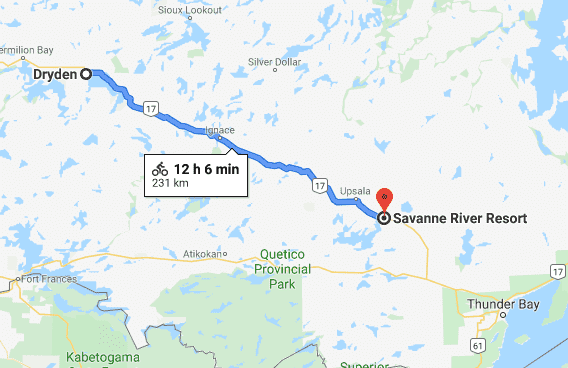

Today was the record distance covered in a single day of the entire trip - 231 km. I left at 800 and arrived at 2000. With one to two hours of break for lunch and other small pauses througout the day then that's probably 10/10.5 hours of biking - solid speed. Spending all day on the road was typical for me.
The road was hilly with trees and rocks on both sides of the road. You never never know what is ahead as the road is veering left, right, up and down - lots of excitement and hope for a good shoulder. In Ontario there is distance marker every 2km showing the distance from your current location to the start of the Trans-Can highway in Ontario - it's useful for measuring how one loses track of time in kilometres.
I stopped for lunch at the Subway in Ignace. Subway is a great place to stop for lunch - free pop refills and big/cheap sandwiches (meatball marinara is a classic). I became quite fond of pop on my bike ride - I've met other bicyclists on the road who would agree. Usually, when reaching a small town in the late afternoon the temptation to stop at a convenience store for a small can of coke after a hot sunny day is overwhelming. Another good place for lunch are the grocery stores - they usually have the 5 dollars combos where you get two pieces of chicken and wedges. Throw in some yogourt or chocolate milk and a granola bar and you've got your gas tank full.
Saw an RV on the road that I saw a week prior. I wonder if they remembered me. You always end up racing acouple RVs throughout the day as they stop frequently. After Ignace I saw two senior bicyclists biking in the opposite direction. They were surprisingly lightly packed - perhaps they stayed in motels/hotels.
Stopped at Savanne River Resort and was surprised for the price I was charged - 25 bucks! No shower, basic outhouse and no 'wilderness' around me - basically a parking lot. I didn't mind the conditions, I just didn't like the price given the conditions.
For dinner I had four sardine cans, a few granola bars, tea, Lipton soup mix and lots of water. Sardine cans are amazing food as they are cheap and nutritious. Soup is great to warm you up while the granola bars are always great. This is a typical dinner. I would mix it up by throwing in some yogourt, canned beans, fruits or nuts.
I was debating over the past few days if I should cut through northern Ontario (as suggested in my guide book) to the east coast directly or take the ferry to Tobermory to Waterloo. I chose the latter tonight as it gave me the opportunity to rest for a few days at home and hang out with friends. I was already warming up to the opportunity to going all the way to the east coast as I have already done so much - and it all seemed 'easier' than I thought it would be (it's just biking).
